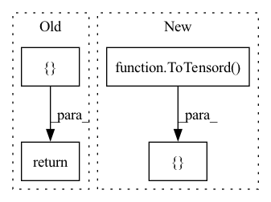

Pattern ID :20920

Before Change
return transform
elif split == "val":
transform = BGCompose(
[
NumpyToTensor(["image", "label"], "float")
]
)
return transform
elif split == "test":
transform = BGCompose(
[
After Change
)
]
elif split == "val":
transform = [
ScaleIntensityRanged(
keys=["image"], a_min=-57, a_max=164, b_min=0.0, b_max=1.0, clip=True
),
Resized(
keys=["image", "label"], spatial_size=[int(x) for x in config["shape_statistics"]["median"]],
mode=["area", "nearest"]
),
// RandSpatialCropd(
// keys=["image", "label"], roi_size=config["augmentation"]["patch_size"], random_size=False
// ),
ToTensord(
keys=["image", "label"]
)
]
return Compose(transform)
In pattern: SUPERPATTERN
Frequency: 3
Non-data size: 4
Instances
Fragment ID: 67372852
Project Name: bwittmann/transoar
Commit Name: 0376a2afeb2100fc53b46326809597aa2c8aa19e
Time: 2022-01-03
Author: bastian.wittmann@tum.de
File Name: transoar/data/transforms.py
M Class Name: AnonimousClass
N Class Name: AnonimousClass
M Method Name: get_transforms(2)
N Method Name: get_transforms(2)
M Parent Class:
N Parent Class:
M File Name: transoar/data/transforms.py
N File Name: transoar/data/transforms.py
M Start Line: 84
M End Line: 132
N Start Line: 70
N End Line: 161
'>
Before Change
)
def pre_transforms(self):
return [
LoadImaged(keys="image"),
AddChanneld(keys="image"),
Spacingd(keys="image", pixdim=[0.79, 0.79, 1.24]),
ScaleIntensityRanged(keys="image", a_min=-57, a_max=164, b_min=0.0, b_max=1.0, clip=True),
]
def inferer(self):
After Change
def pre_transforms(self):
pixdim = (0.79, 0.79, 1.24)
roi_size = [192, 160, 80]
pre_transforms = [
LoadImaged(keys=["image"]),
AddChanneld(keys=["image"]),
Spacingd(keys=["image"], pixdim=pixdim, mode="bilinear", ),
Orientationd(keys=["image"], axcodes="RAS"),
SpatialPadd(keys=["image"], spatial_size=tuple(roi_size)),
NormalizeIntensityd(keys=["image"], nonzero=False, channel_wise=True),
CastToTyped(keys=["image"], dtype=np.float32),
ToTensord(keys=["image"]),
]
return pre_transforms
'>
Fragment ID: 67372855
Project Name: project-monai/monailabel
Commit Name: 78c0d7de2358888a6a6b815c30de768a4e165ecd
Time: 2021-04-20
Author: diazandr3s@gmail.com
File Name: monailabel/engines/infer/segmentation_heart.py
M Class Name: SegmentationHeart
N Class Name: SegmentationHeart
M Method Name: pre_transforms(1)
N Method Name: pre_transforms(1)
M Parent Class: InferenceEngine
N Parent Class: InferenceEngine
M File Name: monailabel/engines/infer/segmentation_heart.py
N File Name: monailabel/engines/infer/segmentation_heart.py
M Start Line: 41
M End Line: 46
N Start Line: 46
N End Line: 58
'>
Before Change
return DiceLoss(sigmoid=True, squared_pred=True)
def train_pre_transforms(self):
return Compose(
[
// Dataset prepreation
LoadImaged(keys=("image", "label")),
AsChannelFirstd(keys=("image", "label")),
Spacingd(keys=("image", "label"), pixdim=(1.0, 1.0, 1.0), mode=("bilinear", "nearest")),
Orientationd(keys=("image", "label"), axcodes="RAS"),
// Training
AddChanneld(keys=("image", "label")),
SpatialCropForegroundd(keys=("image", "label"), source_key="label", spatial_size=self.roi_size),
Resized(keys=("image", "label"), spatial_size=self.model_size, mode=("area", "nearest")),
NormalizeIntensityd(keys="image", subtrahend=208.0, divisor=388.0),
FindAllValidSlicesd(label="label", sids="sids"),
AddInitialSeedPointd(label="label", guidance="guidance", sids="sids"),
AddGuidanceSignald(image="image", guidance="guidance"),
ToTensord(keys=("image", "label")),
]
)
After Change
if self.dimension == 3:
t.append(FindAllValidSlicesd(label="label", sids="sids"))
t.extend(
[
AddInitialSeedPointd(label="label", guidance="guidance", sids="sids"),
AddGuidanceSignald(image="image", guidance="guidance"),
ToTensord(keys=("image", "label")),
]
)
'>
Fragment ID: 67372856
Project Name: project-monai/monailabel
Commit Name: f23d97efde96d05b3354d40d85b20b1d8a566de8
Time: 2021-05-17
Author: sachidanand.alle@gmail.com
File Name: sample-apps/deepgrow/lib/train.py
M Class Name: TrainDeepgrow
N Class Name: TrainDeepgrow
M Method Name: train_pre_transforms(1)
N Method Name: train_pre_transforms(1)
M Parent Class: BasicTrainTask
N Parent Class: BasicTrainTask
M File Name: sample-apps/deepgrow/lib/train.py
N File Name: sample-apps/deepgrow/lib/train.py
M Start Line: 77
M End Line: 94
N Start Line: 79
N End Line: 109